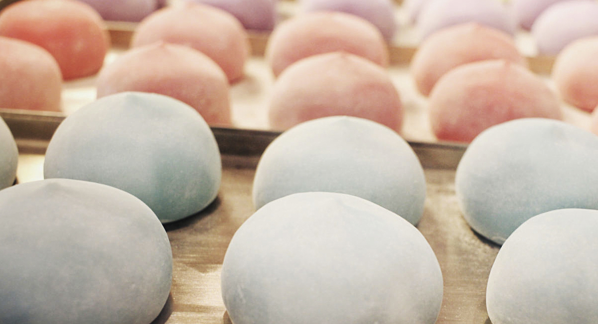

POSTRES DEL MUNDO

En cada pais se sirven postres completamente distintos al resto.
Dulces, salados, amargos e incluso postres acidos.
En esta lista exploraremos los postres mas tipicos de cada pais.
Dulces, salados, amargos e incluso postres acidos.
En esta lista exploraremos los postres mas tipicos de cada pais.